从去年开始，我强迫自己看一些大部头的技术类书籍，来练习自己的专注能力，同时试着远离手机以及各种公众号文章带来的焦虑。为此我屯了很多PDF电子书，给自己列了一个书单。一开始的做法是用电脑配合PDF阅读器阅读，发现自己还是很容易分心，于是想脱离手机电脑来看书。然而手头的Kindle 只有6寸，拿来看技术文档无异于折磨自己，当时各种品牌的大尺寸电纸书动不动就要2K以上，狠不下心来下单。最后还是选择了折衷方案，找淘宝上打印书本的店铺，把文档打印下来装订成书看，就这么持续了几个月。
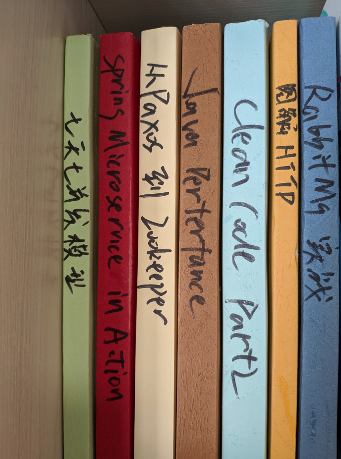
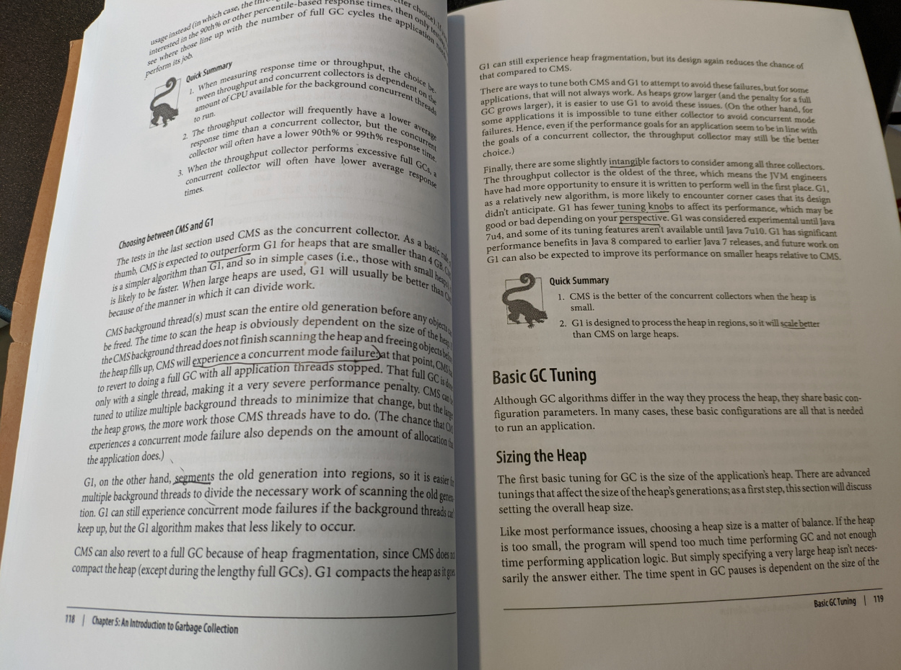
当然这个传统的看书方式也有很多缺点：
- 这些技术类的大部头真的很大，不方便携带，只能在家看。
- 做笔记的方式就是在上面写写画画，然后隔断时间再整理到电脑上。
- 这些书是自己打印的版本，比买书是省下不少钱，但是久而久之，放在家里是很占地方的。
刚好去年年底的时候，小米发布了小米电纸书Pro，价格只要一千出头，我就动心了，咸鱼上找人999买了一个（没赶上之前的预售），三个月下来看了几本书，目前感觉还不错。机器一发布的时候，就已经有蛮多评测的了，今天我就仅仅写下自己的体验。
关于看书
小米电纸书Pro里的多看系统，感觉就是一个手机多看App的简化版（界面类似，但是比手机版少了一些功能）。以前看书用的Kindle，没有刷过多看，第一次使用还研究了一会。
我手头的技术类书籍大多是Manning旗下的《xxx in Action》系列的电子版（非扫描版），它的尺寸在7.8寸电纸书屏幕下，缩放裁边后字体跟我打印在A5纸上的实体书差不多大（小一点点，不会很明显），可以做到与看实体书差不多的体验，300 PPI精细度也足够。
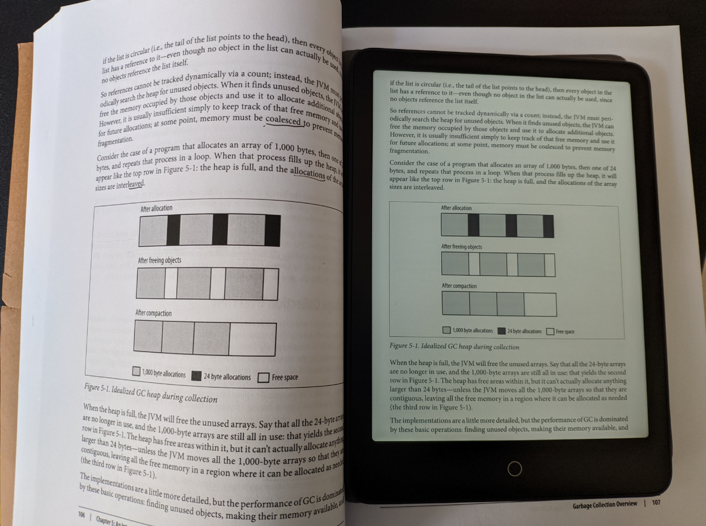
但是对于A4大小的书，或者大一点的扫描版图书，7.8寸看起来就有点够呛了，明显感觉到字体比较小。碰到这个情况，很多人会想用横屏模式来解决，我也是这么想的，结果我发现了它的横屏模式就是个坑：
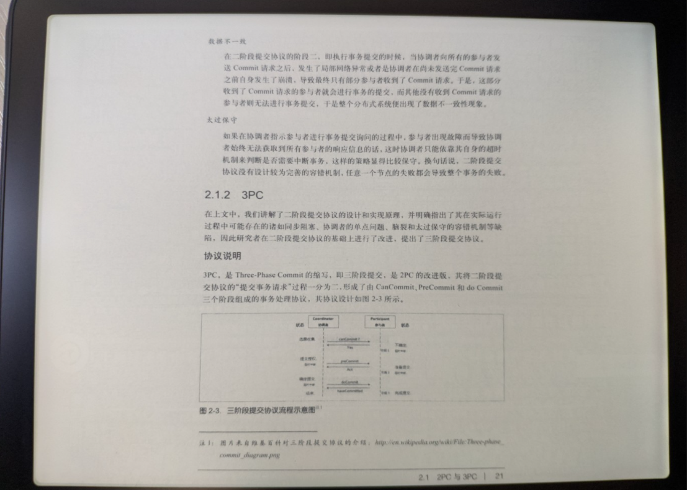
不像手机版多看，小米电纸书Pro是不支持卷轴模式的，也就是说，横屏后，还是一整页显示在屏幕中，两边会大量留白。然后你可以双指缩放放大把屏幕撑满：
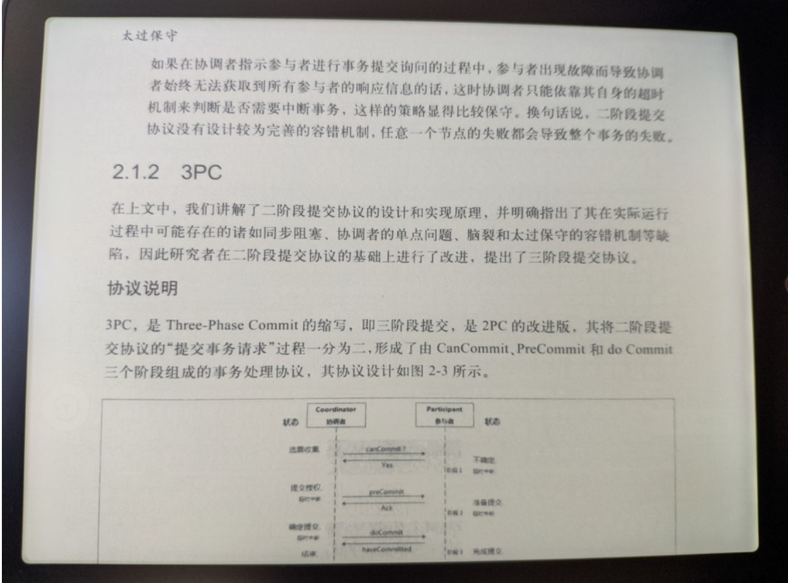
但是也仅此而已，放大后如果想要看当前页的其他部分，需要缩放会原来尺寸，再针对想看的部分放大！也就是说放大后，单击左侧和右侧翻页，还是会直接翻到下一页，而不是显示你没看完的当前页。所以对于大一点的电子书，小米电纸书Pro还是非常不适合。它不像文石那样有论文模式可以把阅读区域分块按顺序阅读。
关于重排
重排是很多7.8寸电纸书解决小屏幕看大书的折衷方案，以前还在用Kindle的时候，就听说多看的系统重排做得很好，这次我也试了一下，基本能够满足我的需求。只要不是扫描版的书，对于排版简单的文学类图书，点一下菜单左下角的T按钮，重排后的效果都还不错，重排后可以自己调整字体大小，行间距等。
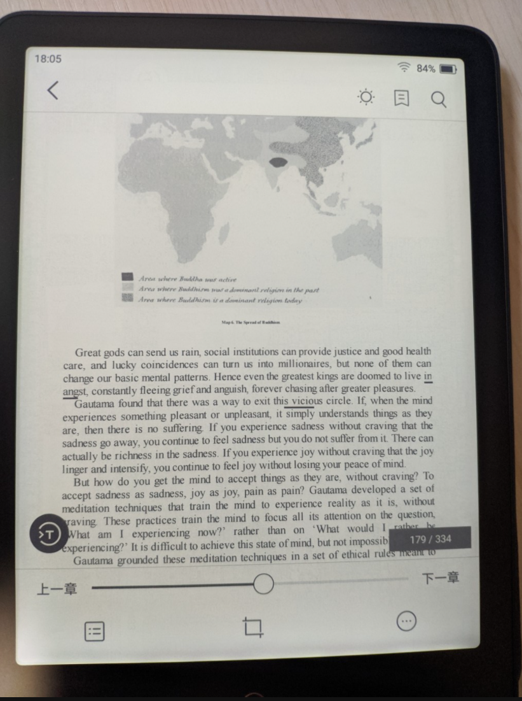
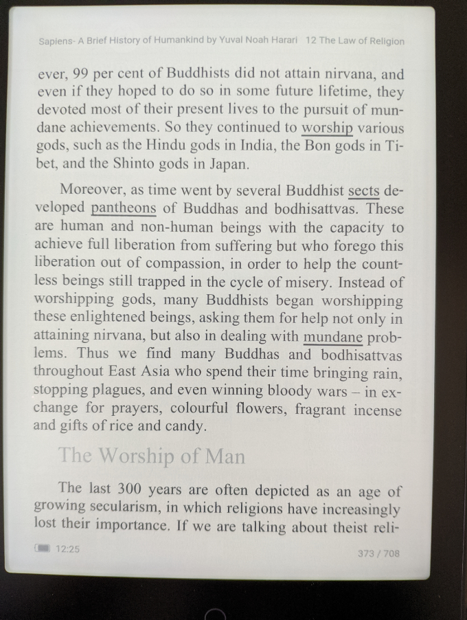
但是对于技术类图书，重排就比较糟心了。往往书的正文部分都可以排的不错，而代码，表格等格式要求比较严格的部分，重排后就全乱了，十分影响阅读。
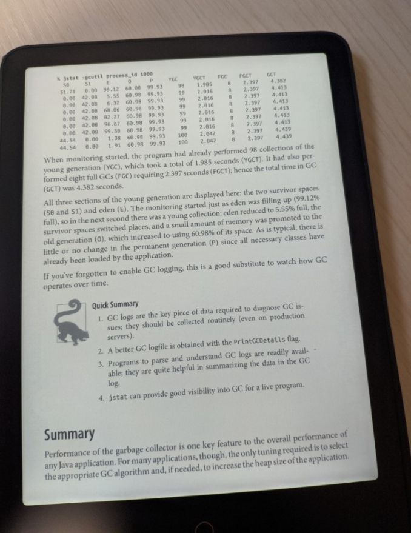
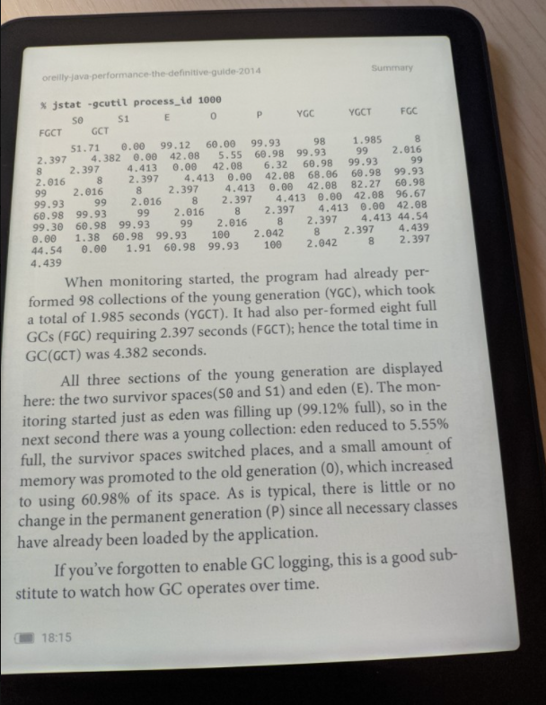
关于传书
小米电纸书Pro传书的方式挺多的，我最喜欢的是它自带网盘，可以往多看系统中传书。上传以后，可以在各端的多看App下都能看到这本书，同时同步进度和笔记，这点挺方便的。
关于做笔记
小米电纸书Pro是不支持手写笔的，它做笔记的方式跟手机版多看App一样，通过长按屏幕选取字块，然后标记成“划线”，或者添加“想法”，如果选中的是单词，还能查字典，然后笔记可以导出到印象笔记。用它选字块的体验跟用Kindle感觉差不多，就是用你的粗手指，在一个响应很慢的屏幕上拖动，要是字太小，经常会选错。添加“想法”时，支持用搜狗输入法和语音输入（需要WiFi），语音输入识别挺准确，就是个别字校准还要用输入法，在墨水屏上用输入法挺蛋疼的，所以也别想记录太精确的东西（我都是后面整理笔记的时候再修修改改）。说到选中文本，之前刚买的时候有个挺严重的bug，就是在裁切模式下，手指选中的单词和实际选中的不匹配，会漂移，线划到当前页缩放前的位置去了。这导致我那段时间基本不用裁切功能，还好后来系统更新修复了。
选中漂移的bug：
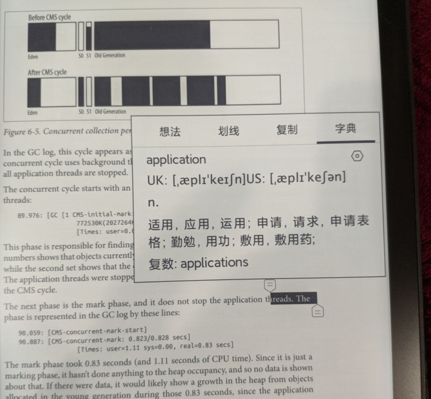
鉴于不那么灵活的划线方式，我做笔记都是阅读的时候粗略地划一下线，然后一段时间后，用电脑端打开手机版多看（用安卓模拟器），将笔记再做一次系统的整理。我想以后如果需要更丰富的记笔记方式，我可能会选择文石之类的设备吧。
关于学习外语
Kindle是有生词本同时支持导入第三方词典的，所以很多人拿来阅读英文文档，记录生词并复习。而小米电纸书Pro，就只有本机自带的词典和机器翻译而已，只能说勉强够用。它的内置词典解释都很简单，这点别说那些开放系统的电纸书，对比Kindle也差一大截。
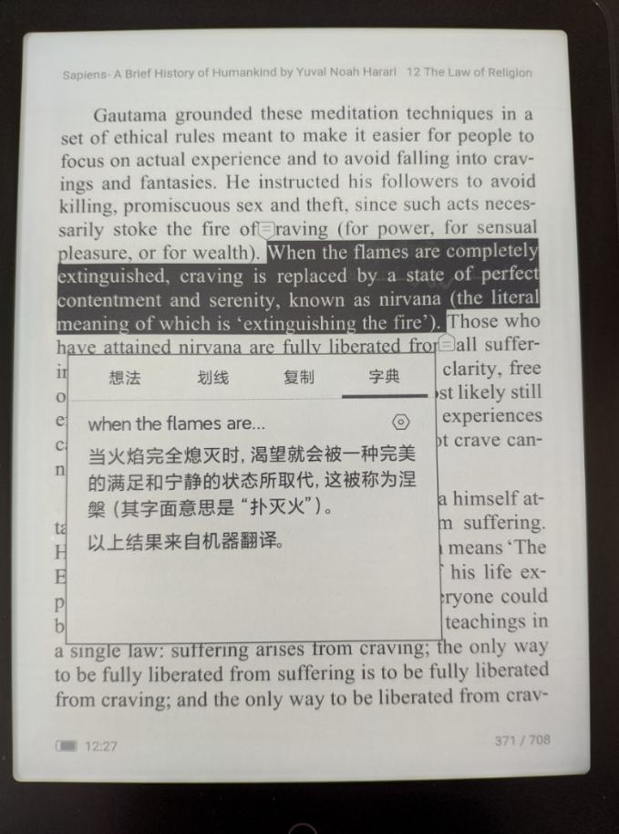
关于看漫画
7.8寸的电纸书看漫画真的是挺合适的，不过也看漫画资源，要是扫描的质量不好的话，还是有点糊。
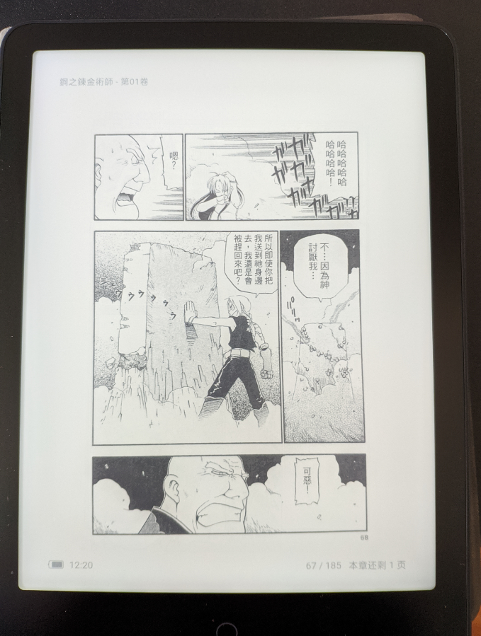
耗电
官网声称待机时间长达四十几天，我平常的体验是如果一天看一个小时左右的话，一周内是不用急着充电的。但是在连接WiFi的情况下，看书时电量真的很容易尿崩。这点体验很明显，我曾经有一天下午在家看书，大概两三个小时，眼睁睁看着电量掉了20%。
关于第三方App
这款电纸书一出来的时候，就有很多UP主进行过评测，它不像文石之类的全开放式系统，要在小米电纸书Pro上装安卓应用，需要进行一些设置，据说大部分安卓应用都支持，甚至还有人在上面看B站。我刚入手的时候，也满怀期待的想要拓宽这个电纸书的使用场景，但是实际操作下来，总是碰到奇奇怪怪的问题。比如装上酷安后点下载应用没反应，装了Anki以后单词数据同步不下来等。后来想想这些也不是我买这款电纸书的初衷，就放弃折腾了。
总结
几个月体验下来，这款小米电纸书Pro，一定程度上培养了我的阅读习惯。它的尺寸适中，适合出门随手放在包里，通勤的时候掏出来看也不会很突兀（不过整个公交车上就我没看手机也挺突兀的23333），也满足了我随时随地看一些技术类书籍的需求。通过它我看完了几本书，明显感觉自己最近的阅读意愿比以往来的强了，想掏手机的时候，多了看书这个选择。虽然比起Kindle，我觉得小米这个多看的系统还有很多改进空间，但是一千块钱的价格，对我来说已经非常性价比了。买了它不久之后，我把原来旧的Kindle通过多抓鱼70块钱卖掉了。最近彩色墨水屏的电纸书也开始出现了，要是未来价格能更亲民一点，换个彩屏的好像也不错呢。
专注力是这个时代很稀缺的东西，在越来越浮躁的社会里，还好有这么个东西可以让我随时看书，获得一点点的满足和平静。